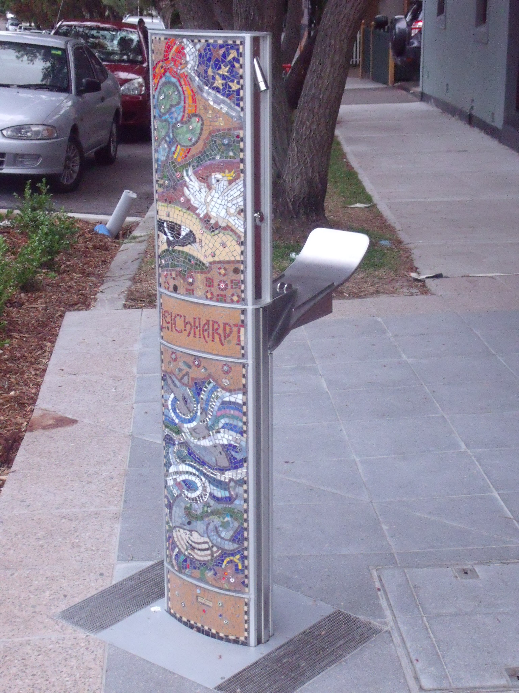
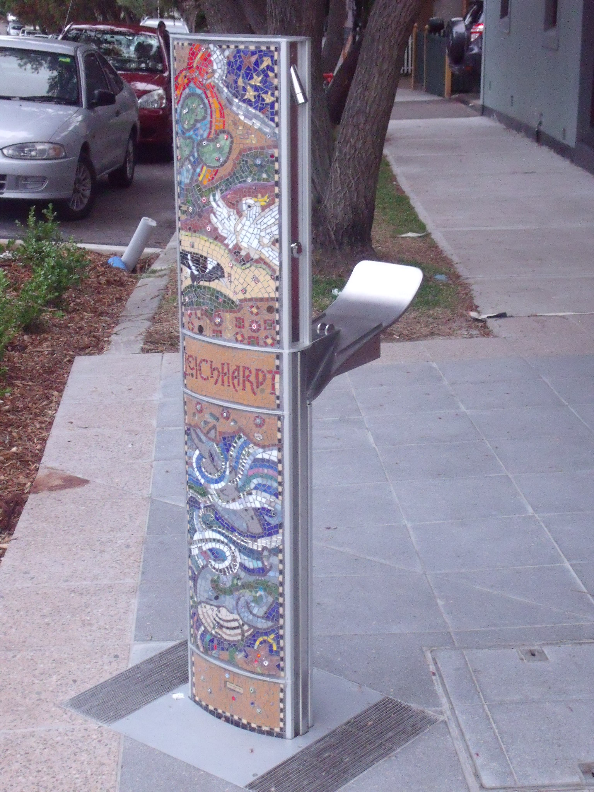
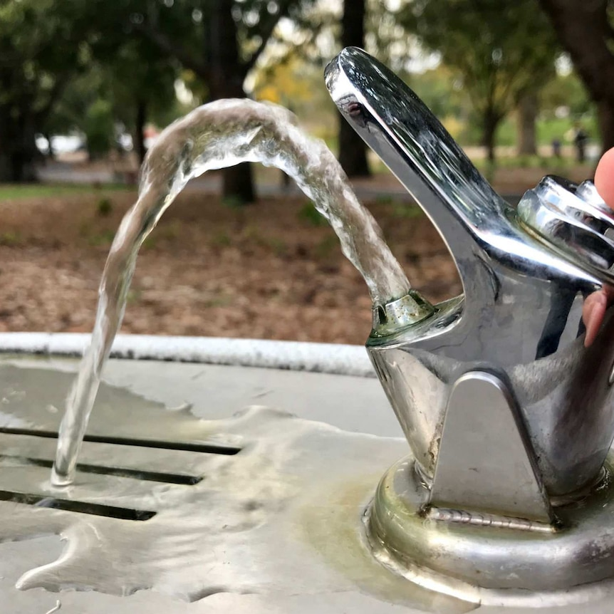
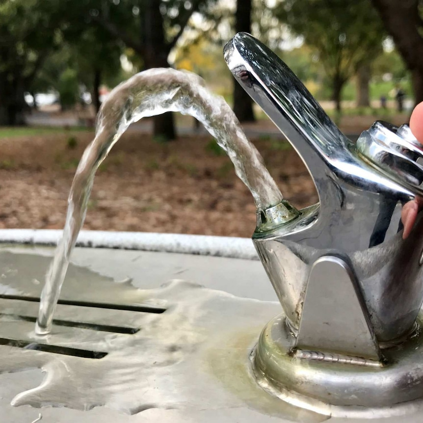

05
People
Oriented
Melbourne's people-oriented development objective, which is represented in public facilities designed for equality and respect, is inextricably linked to the interplay between urban space and people. Residents use these public facilities to interact more effectively with urban environments. The completeness of public facilities reflects a city's development level as well as local citizens' living situations. Residents will be happier if public amenities are intelligent and humanized.


 


 
